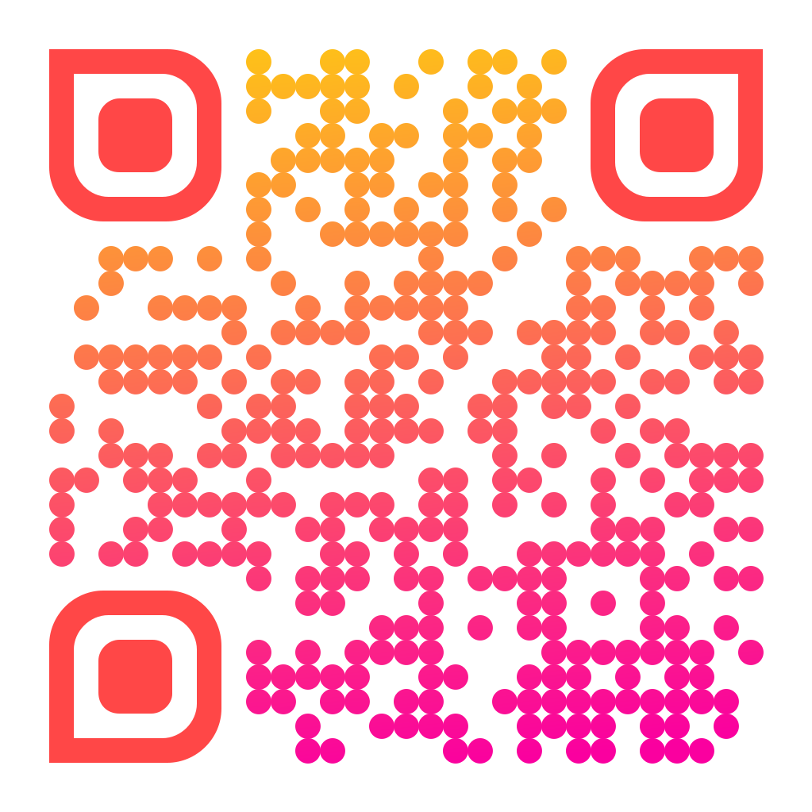

Notre histoire
Une évidence, puis un grand oui
Tout a commencé autour d'un café, puis de longues balades et beaucoup de projets partagés. Aujourd'hui, nous avons la joie de célébrer ce nouveau chapitre avec vous.
17 avril 2027
Bienvenue sur le site de notre mariage. Vous trouverez ici le programme du jour, les informations pratiques et le formulaire RSVP.
Compte à rebours avant le mariage
Notre histoire
Tout a commencé autour d'un café, puis de longues balades et beaucoup de projets partagés. Aujourd'hui, nous avons la joie de célébrer ce nouveau chapitre avec vous.
Infos pratiques
Programme
Cérémonie civile à la mairie de Gisors.
Célébration à l'église de Gisors.
Accueil aux Domaines de Gaston, aux Andelys.
Accueil et festivités aux Domaines de Gaston (détails à préciser).
RSVP
Confirmez votre présence en ligne ou contactez-nous directement.
Save the Date
Scannez ce QR code pour enregistrer la date dans votre agenda ou partager l'invitation.
